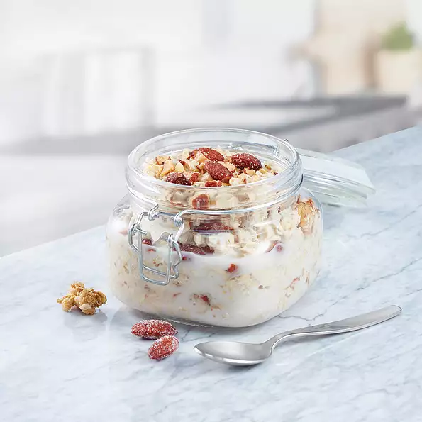

Classic Overnight Oats

Description
Almond Breeze almondmilk and oats make a great no-cook oatmeal. Change it up with different almondmilk flavors and toppings.
Ingredients
- 1⅓ cups Almond Breeze Vanilla almondmilk
- 1⅓ cups Almond Breeze Vanilla almondmilk
- ¼ cup granola (Optional)
- 3 tablespoons coarsely chopped Blue Diamond® Honey Roasted Almonds (Optional)
Steps
- Stir together almondmilk and oats in a medium bowl. Spoon into 2 small bowls or canning jars if desired. Cover and refrigerate 8 hours to overnight, or for up to 3 days.
- Before eating, top with granola and almonds, if desired.